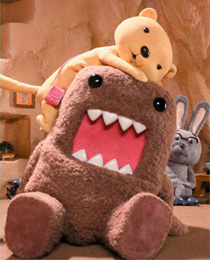

About Domo
 Domo is a mascot of Japan's NHK BS2 satellite television channel, but can also be found on BS1 (cardhouse.com, 2005). NHK produced 26 episodes (hellodomokun.com, 2009).
According to cardhouse.com (2005) Domo "...acquired his name in the second episode, when Usajii turns on the TV for him and an announcer says "Domo konnichiwa""
In Japanese "dōmo" is an informal way of saying "Thank You" (gotsaga.com, 2010). "konnichiwa" means "Hello" (japaneselifestyle.com.au, 2003). The phrase "dōmo, konnichiwa" can also be translated as "Hello Domo" (Wikipedia, 2010).
Domo's profile on domomode.com (2009) states that Domo is:
A strange creature that hatched from an egg. His body is stout but his heart is pure. Loves TV. Often causes trouble by daydreaming and not paying attention to things. Lets out explosive farts when upset.
Favourite food: Japanese-style meat and potato stew
Leavst favourite food: Apples (A big mystery that's in his DNA)